出版與製作
我們做的書、圖鑑與周邊
把各地社區踩過的坑、走出的路，做成書、圖鑑和貼圖。想買的、想看的、還在做的，都在這一頁。
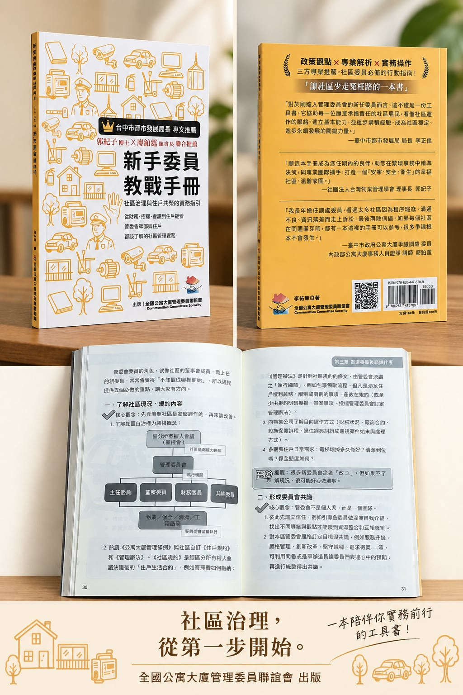
新手委員教戰手冊─社區治理與住戶共榮的實務指引
每個章節都從實務出發：如何召開會議、怎麼管帳、如何挑選廠商、怎麼跟住戶溝通、怎麼凝聚團隊。內容取自各地社區的真實經驗，可依需求查閱、反覆翻閱，也適合作為新任委員交接與培訓的共讀教材。
出版緣起 在協助各地社區的過程中我們發現，許多問題不是沒有人願意做，而是「不知道怎麼做才是對的」：法規零碎、經驗分散，前人走過的彎路常常得再走一次。這本書把這些年的實務經驗整理成可以直接拿來用的工作手冊。本書為教育推廣目的而編撰，非以營利為目的，收入用於本會出版、推廣及會務運作。
- 作者
- 李祐華（本會志工）
- 出版
- 社團法人全國公寓大廈管理委員聯誼會，民國 115 年 2 月
- 規格
- 平裝・14.8 × 20.8 公分
- 推薦
- 臺中市政府都市發展局局長李正偉 專文推薦
郭紀子博士、廖鉑霆 聯合推薦 - ISBN
- 978-626-447-570-9
郵局寄送運費 50 元、7-11 店到店 60 元，也可在臺中市西屯區面交（免運）。下單後匯款、回報後五碼即出貨。
專業推薦
政策觀點 × 專業解析 × 實務操作
對於剛踏入管理委員會的新任委員而言，這不僅是一份工具書，它協助每一位願意承擔責任的社區居民，看懂社區運作的脈絡、建立基本能力，並逐步累積經驗，成為社區穩定、進步永續發展的關鍵力量。
願這本手冊成為您任期內的良伴，助您在繁瑣事務中精準決策，與專業團隊攜手，打造一個「安寧、安全、衛生」的幸福社區、溫馨家園。
我長年擔任調處委員，看過太多社區因為程序瑕疵、溝通不良、資訊落差而走上訴訟，最後兩敗俱傷。如果每個社區在問題萌芽時，都有一本這樣的手冊可以參考，很多爭議根本不會發生。
內政部公寓大廈事務人員證照講師
目錄
十二章，陪你走過委員任期
- 社區事務認識：常見的社區配合廠商
- 委員職務介紹
- 當選委員後該做什麼
- 社區年度計畫參考
- 社區財務規劃方法
- 委員月例會會議重點與技巧
- 社區事務推動流程
- 物業保全遴選重點
- 工程招標重點
- 廠商交涉重點
- 社區經營重點
- 住戶經營重點
角色創作
社區妖怪圖鑑
2023 年「北屯鬧起來」萬聖節活動，我們把社區管委會日常裡的無奈畫成一隻隻妖怪：地下室漏油的、一樓賴著不走的、頂樓曬棉被的……也畫了默默對抗它們的正義使者。角色陸續製作成 LINE 貼圖，也用在本會的活動與文宣。


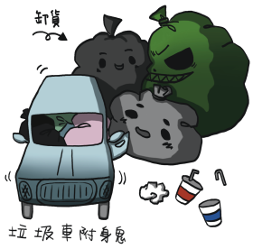

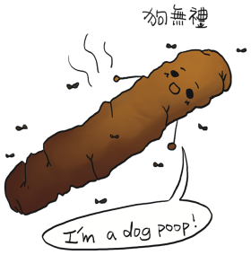

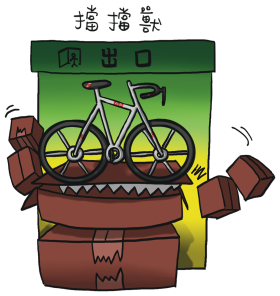


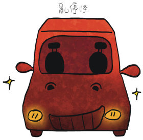

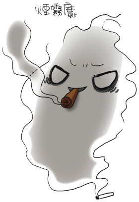

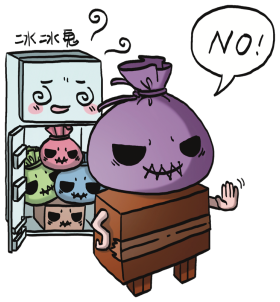

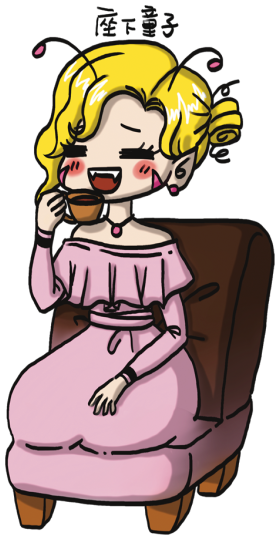


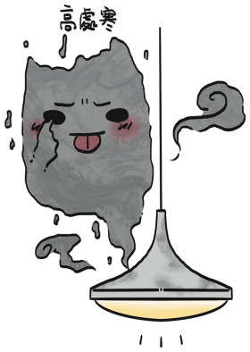

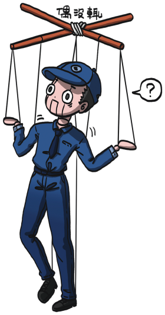

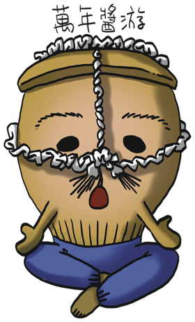

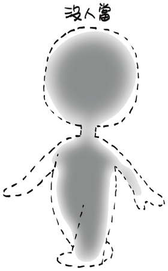

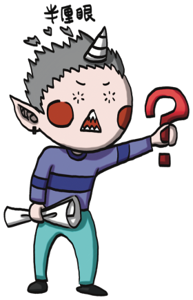

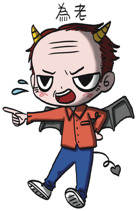


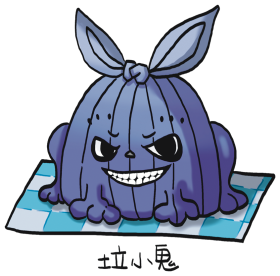


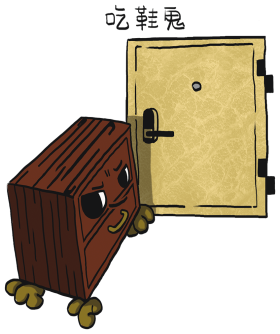


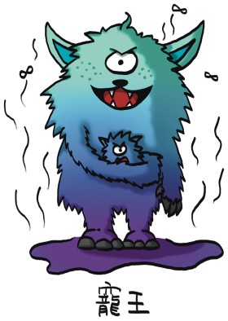

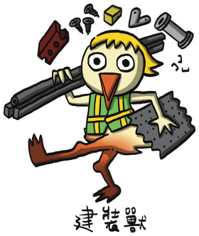

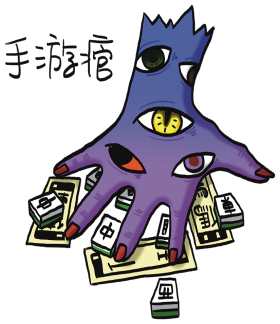


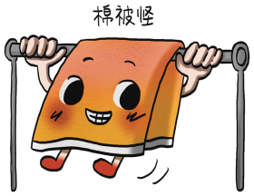


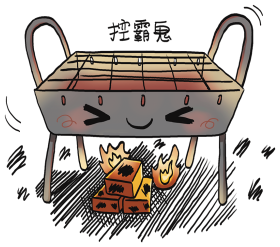


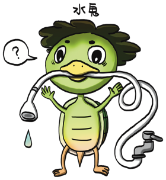

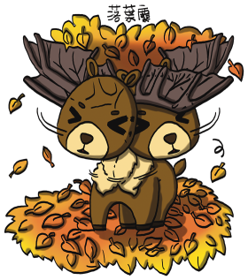


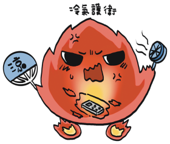


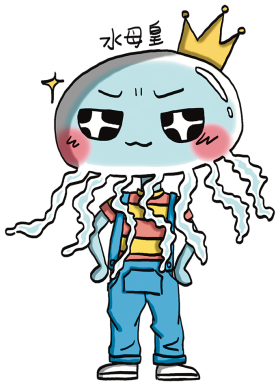

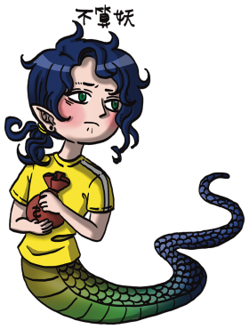

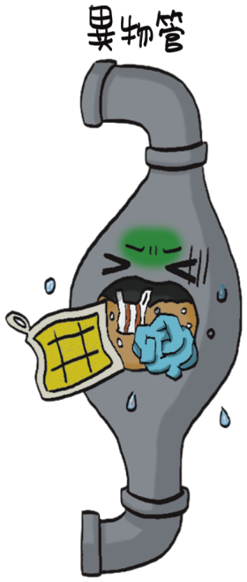

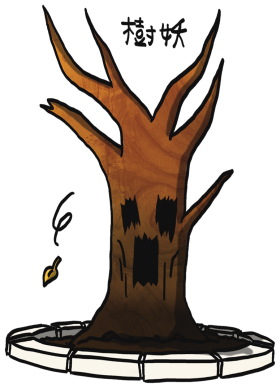

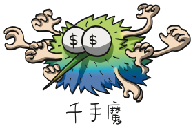
正義使者圖鑑
社區裡也有英雄
妖怪再多，也有人每天在默默對抗它們。


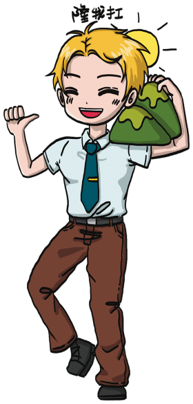


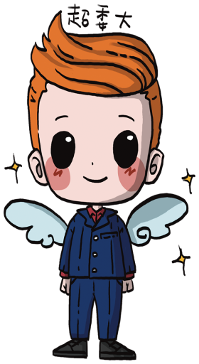


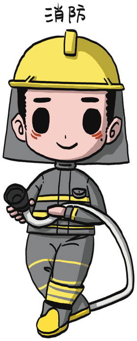

點圖片可放大。
社區妖怪與正義使者全系列角色之著作權屬社團法人全國公寓大廈管理委員聯誼會所有，未經同意請勿轉載或作商業使用。
LINE 貼圖
《寓委聯的社區妖怪們》32 張貼圖
開會傳「我不要」、群組回「所以？」，委員才懂的日常，做成貼圖。審核通過上架後，購買連結會放在這裡。
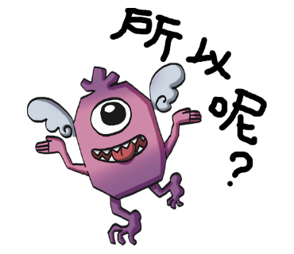
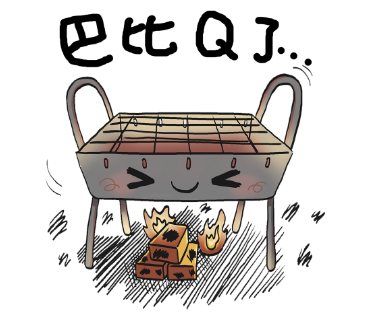